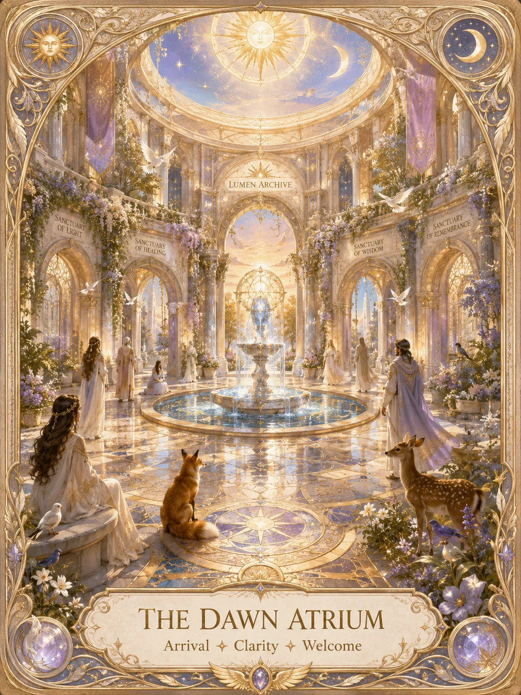

LIGHTWORK INDEX
THE
LUMEN ARCHIVE
Not every truth arrives as a wound.
Some arrive as light.
The Lumen Archive is a sanctuary for reflection, clarity, healing, and the truths that help the self return whole. Explore gentle wisdom, lightwork teachings, and the knowledge that illuminates your becoming.
You are not here to collect more knowledge—you are here to remember what already lives within you.

Arrival Room
The Dawn Atrium
Welcome.
If you have found your way here, then something in you is ready to be met with light.
The Lumen Archive is a sanctuary for quiet return - a place for reflection, healing, truth, and the kind of self-discovery that does not ask you to break yourself apart in order to grow.
Each room within it offers a different form of care: some reflect, some steady, some renew, and some reveal.
You are not expected to arrive here complete.
You are only asked to arrive willing.
When your spirit knows where to begin, choose a sanctuary below.
Choose Your Lightwork
What is asking for light today?
Choose the kind of care your spirit is ready to begin.